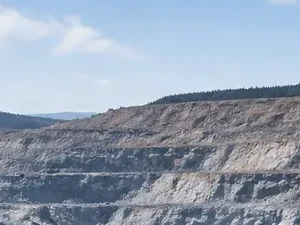
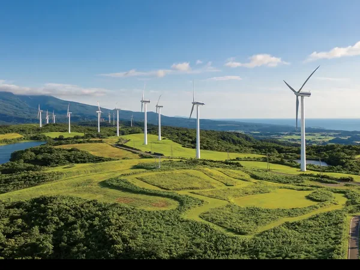
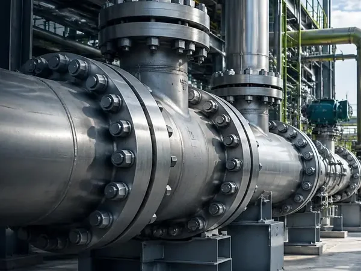

Gama integral
Torque, tensionado, bombeo, elevación, separación y extracción en un solo catálogo.
Equipos hidráulicos industriales
Equitorq reúne llaves de torque, tensionadores hidráulicos, cilindros, extractores, separadores de bridas, bombas hidráulicas y accesorios para el montaje, el mantenimiento y la operación de uniones empernadas y equipos pesados.
Ventajas Equitorq
Una gama completa de equipos hidráulicos para los trabajos más exigentes de la industria.
Torque, tensionado, bombeo, elevación, separación y extracción en un solo catálogo.
Equipos hidráulicos, eléctricos y neumáticos para aplicaciones donde la carga debe ser controlada.
Rangos, medidas y pesos de cada modelo para comparar y elegir con datos.
Llaves hidráulicas de torque con precisión de ±3 %, para uniones que no admiten improvisar.
Llaves compactas, de perfil bajo y ultradelgadas para uniones con poco acceso.
Asesoría y servicios industriales a través de Equimotors SRL, aliado técnico de Equitorq.
Catálogo
Explore las series por familia. Cada una incluye sus características generales y la ficha técnica de cada modelo, con sus medidas.
Cómo trabajamos
Diámetro y grado del perno, torque o carga requerida, espacio disponible y frecuencia de uso.
Torque o tensado, tipo de llave, cabezal, bomba y accesorios. Cotización con ficha técnica.
Equimotors realiza la implementación y capacita a su equipo para un uso correcto y seguro.
Mantenimiento, ejecución de trabajos y soporte posventa con equipos técnicos en Bolivia.
Aplicaciones
Equipos para montaje, paradas de planta y mantenimiento en industrias que trabajan con pernos de gran diámetro.



Servicio y soporte en Bolivia
Para soporte técnico, aplicación de equipos y servicios industriales en Bolivia, contacte a Equimotors SRL.
Preguntas frecuentes
Diámetro y grado del perno, torque o carga requerida (si la conoce), espacio alrededor de la tuerca y cuántos pernos aprieta por jornada. Una foto de la unión ayuda mucho.
Cuando se necesita una carga muy uniforme entre pernos, en uniones de gran diámetro o en bridas críticas, y cuando conviene tensar varios pernos al mismo tiempo. Para la mayoría de trabajos de montaje y mantenimiento, una llave de torque es suficiente.
Las llaves de cabeza hueca y las ultradelgadas actúan directamente sobre la tuerca y entran donde una llave de cuadrante con dado no cabe: cerca de una pared, con pernos largos o con poca separación entre pernos.
Equimotors, nuestro aliado técnico en Bolivia. Se encarga de la implementación, la capacitación, el mantenimiento y el soporte posventa.
Equimotors ofrece arriendo de equipos. Consúltenos qué equipos hay disponibles para las fechas de su trabajo.
Depende del rango de torque, el tipo de cabezal, la bomba y los accesorios. Le enviamos una cotización a la medida de su aplicación.
Cotización y asesoría
Le respondemos con una recomendación técnica y una cotización. Sin compromiso.